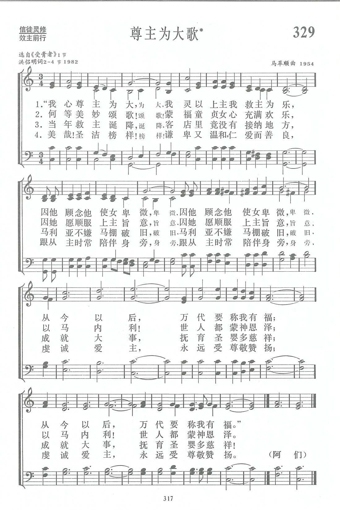

|
|
|
|
|
第329首《尊主為大歌》 |
|
https://www.zanmeishige.com/tab/14002.html?songbook=1&index=329
 |
|
|
|
|

https://www.youtube.com/watch?v=6gN6-AP91o4 -
《我心尊主爲大》選自《受膏者》馬革順曲“My Soul Glorifies The Lord ” From “The Anointed One“
Composed By Gershom Ma.
https://www.youtube.com/watch?v=hTxG2o6FiKs
第329首 尊主为人歌* _马革顺 My soul magnifies the Lord
经文：“马利亚说：‘我心尊主为大’”(路1：46)。
这首诗的原型选自马革顺教授1954年所写的大型圣乐合唱曲《受膏者》。该曲是为上海基督教联合唱诗班圣诞节献唱而创作的，由作者亲自指挥。
《受膏者》全曲共十二首，分《预言》与《成就》两部分，每首以一、二节圣经为歌词，采取独唱、重唱、合唱等多种形式。其中《我心尊主为大》原是一首女声独唱及女声三重唱，它以马利亚的《尊主颂》(路1：4 6—55)为依据，唱出童女愿意接受神旨的心声。
马革顺1914年出生于南京一个基督教家庭，1937年毕业于南京中央大学音乐系，1947年去美国深造，入威斯敏斯特合唱学院专攻圣乐及合唱指挥，回国后曾任中华浸会神学院音乐系主任，以后任教于华东师范大学音乐系、上海音乐学院。他是中国音乐家协会理事，中国音协上海分会常务理事；也是国际合唱学会会员，曾获美国威斯敏斯特合唱学院荣誉院士称号，美国瓦特堡学院音乐艺术荣誉博士学位。
1981年中国基督教圣诗委员会成立，他被邀担任顾问，为《新编》内新创作的选定与修改尽了不少力量。同时，为了使《我心尊主为大》这首诗能被更多信徒唱颂，他慨然应允把《我心尊主为大》改编成为一首会众唱诗，即《尊主为大歌》。
马革顺退休以后，多年来致力于培养教会音乐人才，他为制作《新编》的四辑赞美诗录音带以及《圣诞诗歌百人合唱》录音带担任诗班指挥，尽了许多力量。凡参加的人都为他七十多岁高龄，尚且如此一丝不苟、严格要求，而又热情饱满、以身作则的精神所感动。他自己也满心喜乐，常说：“能与教会内有奉献心志的唱诗班一起工作，是我最大的幸福。”近年来，他屡次赴美国及亚洲各地讲学，不忘促进圣乐事工。
《我心尊主为大》原来只有一节。《新编》编辑部的洪侣明同工(简历参阅第45首)读了这首诗的改编稿以后，想到如能多有几节，必将有助于信徒学习马利亚的美好榜样。
她征得作者同意，按曲调进行的要求， 增写了第二至四节，细腻地刻划了马利亚如何存心顺服，在马棚里成就了大事。
特别是第四节，把马利亚爱主、跟从主、陪伴主的形象予以重现，使唱的人都受到激励。
1991年5月，上海基督教圣歌团请马教授重新指挥演唱《受膏者》。此曲的录音带已制成发行，歌谱也将出版。